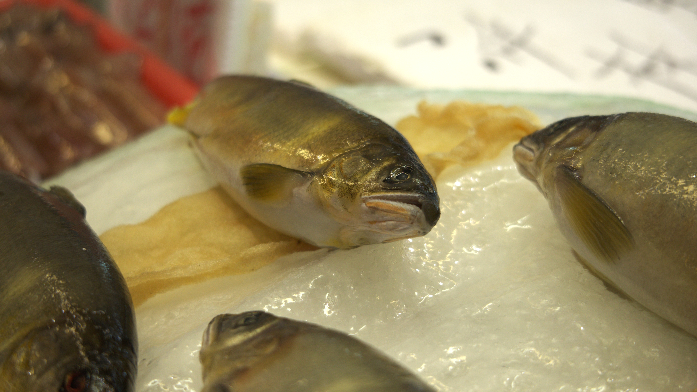
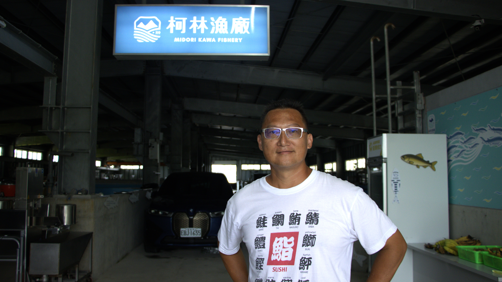

夜幕降臨，宜蘭縣冬山鄉的漁場卻沒有跟著沉寂。
為了維持養殖香魚所需的環境，魚池旁的燈光與水車仍持續運轉著。對多數養殖業者而言，這是香魚維持生長的重要設備；但對附近居民而言，夜間的光照與水車聲，可能成為夜晚生活中的干擾。
當養殖香魚需長期依賴乾淨水質、光照與設備，養殖業者又該如何與周遭居民共存？
宜蘭縣香魚養殖佔全臺九成以上的產量，其中又以冬山鄉佔據最多。之所以成為養殖重鎮，答案竟藏在「水」裡。由於蘭陽平原三面環山、雨量豐沛，山區的雨水滲入地下。當地下水流到地勢較低、不易滲透的砂土受阻時，便會受壓上升湧出地表，形成天然湧泉。具備香魚生長所需的低溫、潔淨水源的環境也因此在這裡誕生。

一池湧泉，養起宜蘭香魚產業
香魚的養殖技術門檻偏高，從魚苗培育到成熟，每個階段都需要養殖業者細心管理。香魚對生長環境相當敏感，除了需要乾淨、清澈的水質與充足的溶氧量，水溫也須維持在一定的範圍。此外，日照條件同樣會影響其生長。香魚在養殖環境一旦受到污染，或水溫、水質等條件出現變化，都可能導致香魚生病甚至死亡。
除了對水質敏感，香魚本身也容易受到驚嚇，養殖時通常需要與其他魚種區隔，避免受到干擾，並提供足夠的活動空間，讓其能在水域中自由游動。也正因為香魚對生長環境有較高的要求，宜蘭豐沛的水資源與天然地下湧泉，便成為發展香魚養殖的重要條件。
高標準的養殖需求 與居民生活的拉鋸
香魚的生長除了仰賴乾淨水質，日照也是影響成長的重要條件。日照時數不足或水溫過低，可能提前誘發香魚性成熟，使香魚停止成長。因此，為了延長香魚的生長期，部分養殖業者會在夜間開啟投射燈，模擬自然日照，讓香魚維持在適合生長的階段。
另一方面，香魚對水質相當敏感，養殖過程也需要持續維持池水的含氧量與水體流動，因此業者會使用水車維持池水循環與溶氧。燈光與水車都是維持香魚生長的重要設備。當設備在夜間持續運轉，養殖問題可能從魚池延伸至周遭居民的生活空間。
對於鄰近住宅區的養殖場而言，夜間持續亮起的投射燈，以及水車運轉所產生的聲響，都可能成為居民生活中的干擾。宜蘭縣冬山鄉柯林魚場業者許智越表示：「這是沒有辦法避免的問題，除非把養殖場設置在人煙稀少的地方。」面對這樣的情況，許智越也提出解決之道，例如替水車加裝遮罩，以隔絕部分運轉時產生的噪音，或將養殖場設置在較偏遠的地區。
而真正的難題在於，對業者而言，燈光與水車是維持生產的必要設備；對居民而言，夜間的安寧同樣是生活不可或缺的一部分。當產業需求與生活品質發生碰撞，如何在兩者之間取得平衡，至今仍是香魚養殖產業尚待解決的課題。
產品開發、加工，使香魚價值更為提升

柯林魚場所養殖的香魚，迄今並未出現大幅度的產業轉型，但業者並未因此停下探索的腳步。之前從事廚師行業的老闆許智越透過研究與產品開發，將香魚進一步製作成甘露煮。經過加工後，整尾魚連同骨頭皆可食用，讓原本以鮮魚販售為主的香魚，多了一種消費方式。
除了產品開發，柯林魚場也掌握從育種、養殖到包裝的生產流程，形成一條龍的經營模式。養殖出的漁獲除了製作加工食品，也能供應餐廳，讓產品經營模式更加多元。對許智越而言，從既有產業基礎出發，思考如何延伸漁獲的價值，也讓一尾香魚有更多被消費與認識的可能。